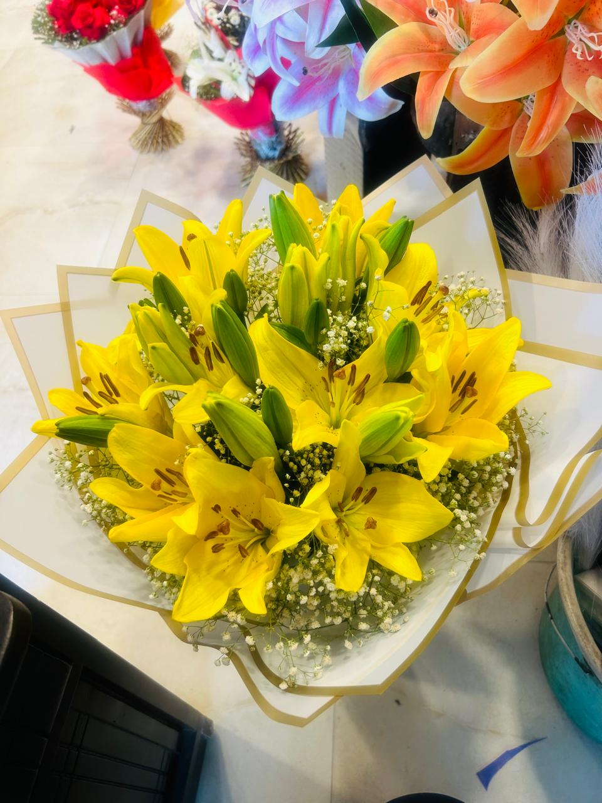

Rose N Petals is the bouquet delivery unit of Sharma Flowers, a Ghaziabad flower business with 50+ years
of flower market experience. Customers can order directly from an established local florist for delivery
to Kavi Nagar, with clear confirmation of the available flowers, bouquet design and delivery time.
We prepare rose bouquets, mixed flower bouquets, lily bouquets, heart bouquets, chocolate bouquets and
simple flower bunches. Order early for a wider flower choice, or contact us for a fresh bouquet available
for urgent same day delivery to Kavi Nagar.
Same Day Bouquet Delivery to Kavi Nagar
Send the complete receiver address in Kavi Nagar, occasion, budget and preferred delivery time on
WhatsApp. We will suggest fresh bouquet options available at the shop and confirm the delivery schedule.
We deliver to homes, apartments, offices, schools, clinics and local event venues within Kavi Nagar, Ghaziabad.
Customers order flowers for parents, wife, husband, girlfriend, boyfriend, children, friends, teachers,
colleagues and relatives. Each bouquet can include a short message card for birthdays, anniversaries,
congratulations, apologies, thank you wishes or a simple surprise.

Popular Flower Delivery Orders in Kavi Nagar
Choose a bouquet according to the receiver, occasion and budget. Basic fresh bouquet options start from
Rs 200 when suitable flowers are available.
Romantic gift, birthday surprise, Valentine's gift, special day
Rs 999+
Prices change with flower season, bouquet size, wrapping style and delivery requirement. Contact us for
current fresh flower choices and the final price before placing an urgent order.
Flowers for Different Occasions in Kavi Nagar
Birthday Flowers
Fresh birthday bouquets for parents, children, friends, siblings, grandparents and relatives.
Love and Anniversary
Rose bouquets for wife, husband, girlfriend, boyfriend, proposals and wedding anniversaries.
Care and Good Wishes
Get well soon flowers, thank you bouquets, congratulations flowers and welcome gifts.
Family and Festivals
Flowers for Mother's Day, Father's Day, Raksha Bandhan, Karwa Chauth and family celebrations.
Office and Formal Gifts
Office greetings, reception bouquets, single rose bunches and flowers for colleagues or clients.
Send Flowers to Kavi Nagar from Anywhere
This page is focused only on flower delivery to Kavi Nagar, Ghaziabad. You can order
from anywhere in India or outside India, and we will deliver the bouquet to the receiver in Kavi Nagar.
Share the receiver name, phone number, complete Kavi Nagar address, occasion, message card text and
preferred delivery time.
Same day delivery depends on flower stock, order time and the exact address in Kavi Nagar. For urgent
delivery, contact us with the full order details so we can confirm the freshest available bouquet and a
practical delivery time before payment.
Frequently Asked Questions
Do you provide same day flower delivery in Kavi Nagar Ghaziabad?
Yes, Rose N Petals provides same day delivery to Kavi Nagar for rose bouquets, mixed bouquets,
birthday flowers, anniversary flowers and last-minute gifts, subject to availability and order time.
What is the minimum bouquet price for delivery in Kavi Nagar?
Basic fresh bouquet options start from Rs 200 when flowers are available. Final price depends
on flower type, bouquet size, wrapping style and delivery requirement.
Which occasions can I order flowers for in Kavi Nagar?
Order flowers for birthdays, anniversaries, proposals, apologies, congratulations, get well wishes,
welcome gifts, thank you gifts, family occasions and office greetings.
Can I order from another city or country for delivery to Kavi Nagar?
Yes, you can order from anywhere in India or outside India, and Rose N Petals will deliver the
bouquet to the receiver in Kavi Nagar, Ghaziabad.
How do I order flower delivery in Kavi Nagar on WhatsApp?
Send your bouquet choice, budget, complete Kavi Nagar address, receiver name, phone number,
occasion, message card text and preferred delivery time. We will confirm availability and timing.